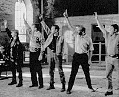
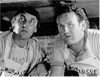
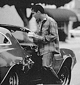
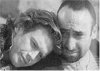

Contents | Features | Reviews | News | Archives | Store

Contents | Features | Reviews | News | Archives | Store
 |
23rd Seattle
International |
One always looks for the main trend in films submitted to SIFF, and, by the midpoint in the festival, it always becomes evident. If last year offered up one too many versions of the Scorsese/Tarantino School of Criminal Lowlifes, this year has to be distinguished by the number of films playing games with narrative structure – each employing various versions of the Tarantino Flashback Narrative, one that enfolds upon itself for the purposes of increasing tension and interest. I’m happy to report that, unlike last year, the result of following Tarantino’s formula is less imitation than genuine innovation.
Among the best of them is Eye of God, a film that follows two parallel storylines, one about Tommy Spencer, a boy who has seen too much trauma in his life, including the suicide of his mother. The other involves the misery of Ainsley Duprey (Martha Plimpton), a young, idealistic woman at dead ends so desperate for a normal life that she marries an ex-con, equally idealistic, with a past he is reluctant to divulge. When the lives of Ainsley and the young boy intersect, the meeting can only happen in the realm of tragedy. Overshadowing Ainsley and Tommy’s individual pain in Oklahoma City is the mass misery of the trial of Timothy McVeigh’s trial, which Ainsley watches faithfully, unaware that her own life is about to be impacted, not only by wrong choices, but also by the same sort of arbitrary self-righteousness that McVeigh is accused of employing as a justification when he presumably planted a bomb at the Alfred P. Murrah Federal Building in April 1995. Eye of God delicately but deliberately makes the connection between this self-righteousness and the right some people assume that they have to inflict pain on others in the name of ideology. The title itself, of course, primarily interweaves narrowness of vision with its enforcement by extreme religious beliefs, but the film is not an attack on religion alone; rather, the film questions the prevalence of blindness on all levels, from those who interpret religion to suit their own prejudices, as well as those so desperate for happiness at any price that their vision is impaired. The fact that Ainsley sports a glass eye is the first metaphorical warning sign that her life will be marked by trouble. The symbolism may be somewhat obvious, but powerful performances by Martha Plimpton, Kevin Anderson and Nick Stahl place this film in an entirely higher category than the average small-town psychodrama.
Equally excellent is Peter Cattaneo's The Full Monty, a hilarious and sobering take on post-industrial life in 1990s Britain. The scintillating Robert Carlyle (he played the psychopathic Bigbee in Trainspotting) is back as an unemployed industrial worker facing loss of his custody rights because he is 750 pounds in arrears for child support payments. After watching the local women line up in droves to see the Chippendale dancers, he concocts a scheme to support his favorite charity – himself. He and a group of other ex-employees will become exotic dancers themselves, for one performance only, and with one big difference: the amateurs will give the audience what the Chippies can’t, namely, the spectacle of a "full monty" (complete nudity). The Full Monty could be considered a companion piece to Brassed Off (the other film in the Festival concerning the dispossessing effect of layoffs among blue-collar Brits in Thatcher’s Britain); in fact, Monty is the grim sequel, ten years down the road: there’s no improvement yet in sight. The Full Monty and Brassed Off act as indictments of political indifference, but The Full Monty, for all of its surface outrageousness, conducts its indictment in a more quiet, hence, more skillful, fashion..
The Van, Stephen Frears’s third installment in his and Roddy Doyle’s "Barrytown trilogy," also has the resourcefulness of the unemployed, or lack thereof, at its center. Colm Meaney is back to persuade his friend Bimbo (a great performance by Donal O’ Kelly) to set up a fish-and-chip van as a new occupation. Of course, the question is whether the two friends will be able to continue speaking under the pressures placed upon their relationship by the realities of self-employment. The Van is not as rowdy or bawdy as its predecessor in the series, The Snapper, but still a marvelous, if somewhat slowly-paced, film. Watch for one solar-plexus-straining scene involving the deleterious effects of mixing a deep-fryer with a diaper.
One of the more remarkable debut films this year is Miguel Arteta’s Star Maps, a unique and tragic take on Latino life in L.A., A young man named Carlos (Douglas Spin, in one of the best performances in the festival so far) is brought back to L.A. from his grandparents’ home in Mexico to help support his family, which is disintegrating not from money problems, but from the corrosive effects of the father’s sociopathic behavior. Dad, you see, is a pimp, who sells the sexual services of boys under the guise of selling maps of stars’ homes to tourists. The remarkable thing about Artega’s film is the way in which it refuses to fit into the traditional – and comfortable – stereotypes that tend to define the Latino film genre. Two stereotypes in particular are most prevalent: viewers are shown either the "El Norte" saga of noble, struggling immigrants who are always, despite increasingly grim circumstances, pure at heart and of motivation, or the dysfunctional Latino unit, with no hope of improvement, whether the members are unwed mothers (a la Allison Anders’ Mi Vida Loca) or violent gangsters.. Arteta conjoins the upward mobility of the first with the misery of the second and, through doing so, questions the sensibilities that underlie both. Because of the father’s lifestyle, his family can afford to live in a middle-class neighborhood with no interference from social-service workers, and Artega weaves a sardonic undercurrent into the story; the family members seem unconcerned with the father’s exploitation of others, including his own son and the destruction of his dreams, as long as the money keeps coming in and as long as no one talks about the situation. Indeed, the family’s illusions come apart only when Dad’s vulgarity and Carlos’s bitterness forces everyone’s eyes wide open. Star Maps will no doubt prove to be controversial among certain Latino groups who will probably see it as another illustration of one of their own "letting the side down." In a more perverse sense, however, the film promotes a sense of equality between Latinos and Anglos, insofar as the former group has the same sociopathic potential as the latter.
Director Nancy Meckler, whose alternately brilliant and confused film about murderous servants, Sister, My Sister, played SIFF two years ago, is back again with a much better film, Alive and Kicking, about a dancer forced to face the oncoming specter of two seemingly intolerable events: the onset of AIDS and the discovery of true love. Alive and Kicking is thoughtful without being maudlin, witty without being snide (although many of the characters’ comments are redolent with levels of acid sufficient to warrant a "corrosive" warning label on each). The film underscores the paradox of living in the face of limitations, while making the prospect of extracting as much joy as possible from hopeless circumstances an exhilarating exercise. Alive and Kicking is a film with universal appeal precisely because it transcends all boundaries and states of infection to become a lesson in living for everybody, gay and straight alike.
Far less transcendent is Jeff Lipsky’s dreadful debut film, Childhood’s End -- a most inappropriate title because, as the film progresses, it becomes depressingly apparent that Lipsky and his screenwriter are still stuck firmly within a state of childishness, at least as far as their interpretation of the world is concerned. The characters within are social-climber hopefuls, replete with the old, tired sarcasm and self-evident pronouncements on everyday life (self-evident to everyone but themselves, that is) that seem to masquerade as intellectual profundity in contemporary cinema. The "philosophy" ruling their minds never rises higher than their belt buckles, as one nasty female makes clear with her charming party-time declaration that "there’s too much penis envy in this room." In Lipsky’s former life as an employee of John Cassavetes’s company, he obviously picked up some of the Master’s bad habits, not least of which was a tendency toward self-indulgence as manifested in sequences that seemingly went on forever (a trait especially evident in 1971’s Husbands, and the overly-long bar sequence lasting only twenty minutes but which seemed to go on forever: the overall effect was singularly soporific and almost detrimental to the flow of an otherwise provocatively thoughtful film).
After all of this "significance," it was time to get down, dirty and mindless with a few "chopsocky" films. There were two really good ones this week. The Big Heat, a Hong Kong film from 1987, had, as its official pretext, something to do with a drug kingpin in Malaysia causing corruption in Hong Kong, which resulted in the murder of a vigilant police inspector’s good friend. In actual fact, the proceedings were merely an excuse for lots of exciting action sequences, bubbling over with all of that eye-challenging editing and camera angles, not to mention violence, so necessary for creating a great sense of catharsis in an increasingly film-weary audience, although repeated references to the impending Chinese takeover this July, made in the context of ten years ago, acted like an eerie ineluctable ghost that hovered never far away. Another great mental tonic came in the form of Forbidden City Cop. This film had more of a screwball spirit to it. Set in Imperial China, it contains an Imperial guard who creates wacky inventions, a wife who doesn’t understand him, two evil wizards who want to rule the world by killing the Emperor and every doctor in the country, and a beautiful concubine coveted by the Emperor and the guard. Unpretentiously manic, and without any socially redeeming features whatsoever, Forbidden City Cop did redeem itself precisely because of its illogical silliness. The opening credits alone – razor-sharp send-ups of the title sequences created by the late Maurice Binder for the "James Bond" series – were a delight and set the overall tone for the delicious vulgarity that was to follow. Call them badly-needed junk food for the mind.
Next Week: Midnight Hysteria with Amanda Plummer, controversy over The Waternelon Woman, the Filmmakers’ Forum, and the Golden Space Needle winners.
Contents | Features | Reviews | News | Archives | Store
Copyright © 1999 by Nitrate Productions, Inc. All Rights Reserved.